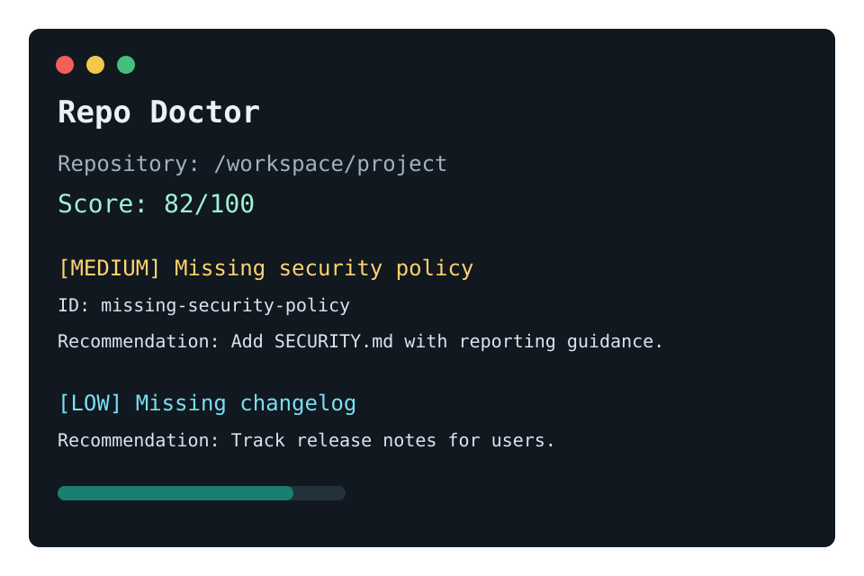

Local scan
repo-doctor . --markdownCLI and GitHub Action
Repo Doctor audits README guidance, license, tests, CI, templates, security policy, changelog, package metadata, and SARIF output readiness.

repo-doctor . --markdownrepo-doctor . --fail-on mediumrepo-doctor . --sarif > repo-doctor.sarifUse Repo Doctor during issue triage, pull request review, and release readiness checks. It keeps repository maintenance signals visible and repeatable.